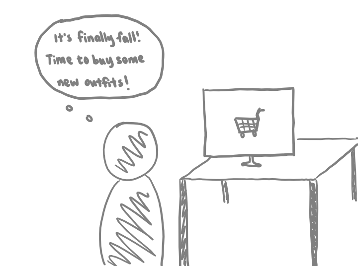
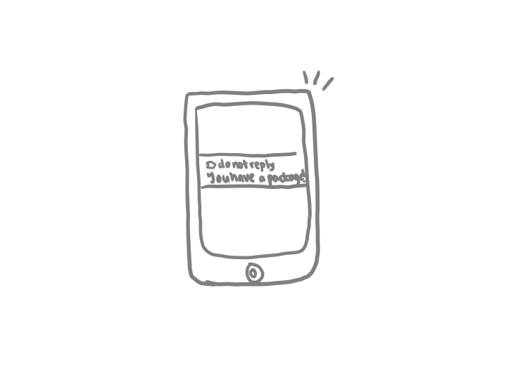
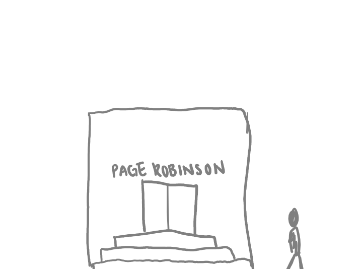
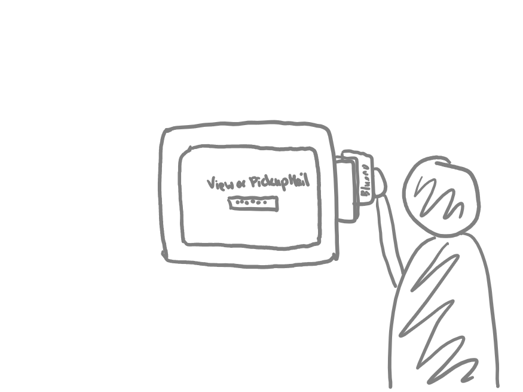
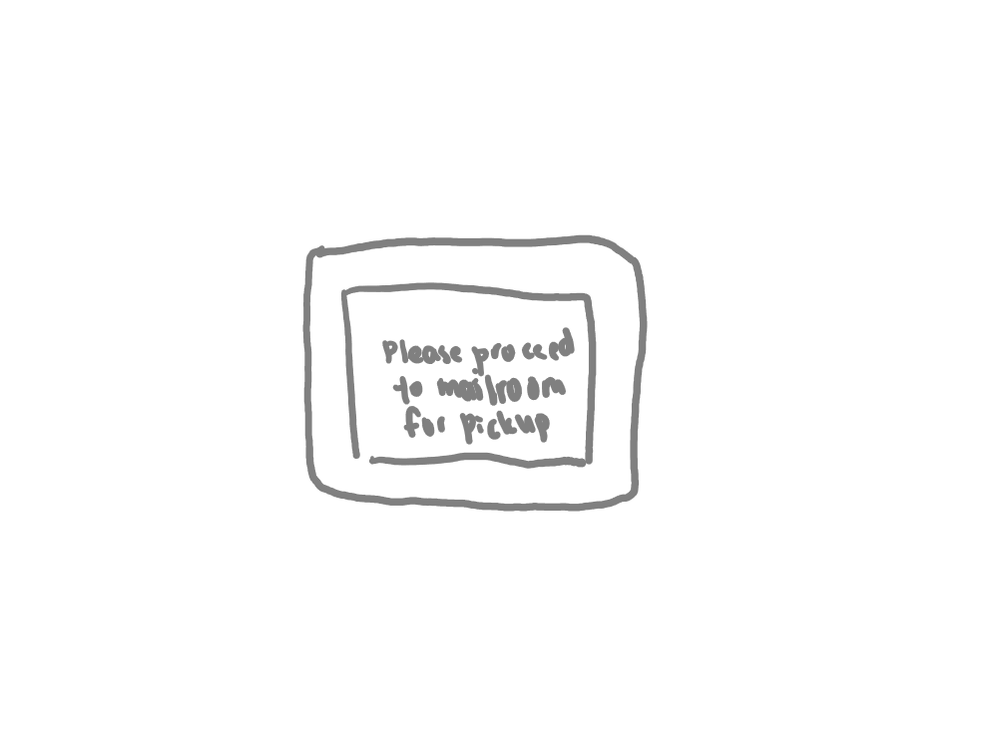
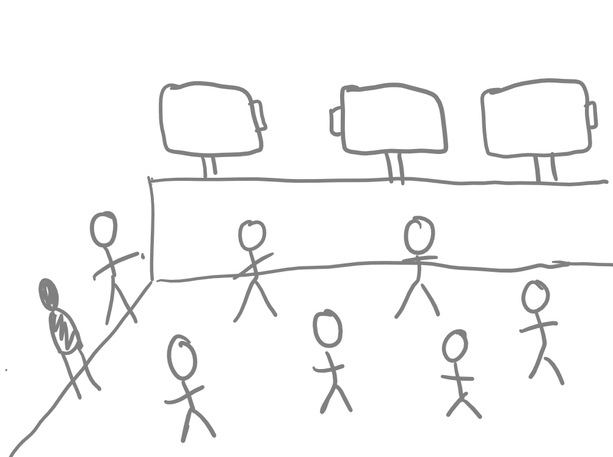
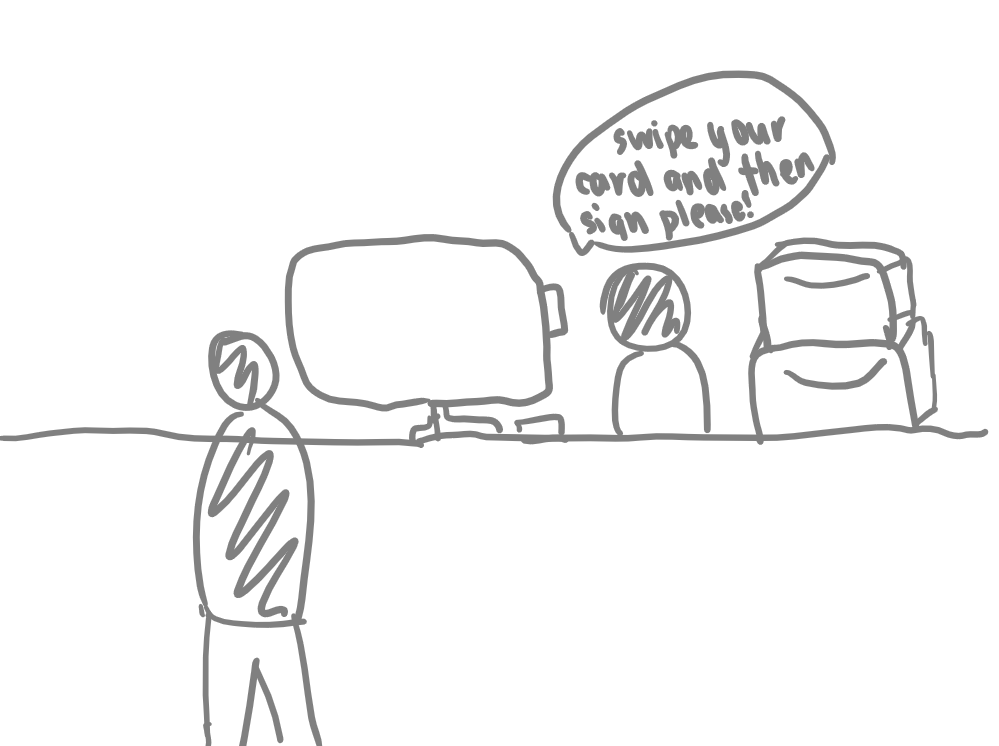
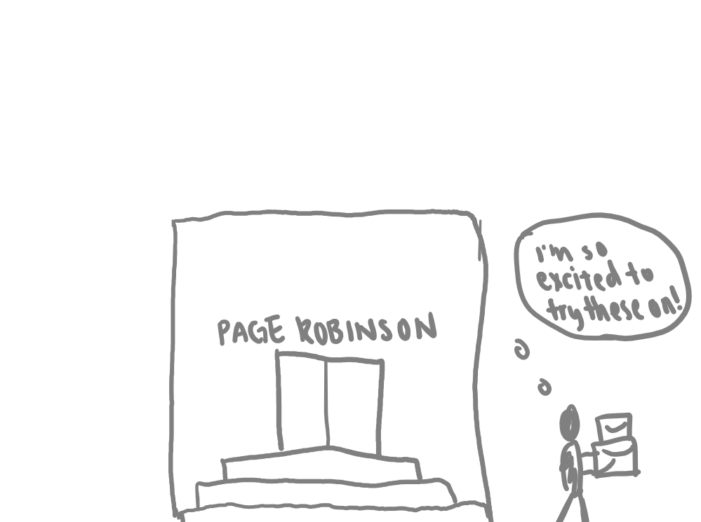

Understanding Users: Observations & Interviews
Although I have used this device personally many times during my past few years at Brown, I wanted to better understand how other users interacted with the interface to see if my experiences aligned with the experiences of others. To do so, I observed users interacting with the device during various hours of the day, including times when the mailroom was jam packed with people as well as times when only one or two students were inside waiting to pick up their packages.
User Observations: Key Takeaways
- Users first swipe their Brown ID, then interact with the touch display. If the screen indicates that the user has a package, all users observed chose the option to "Pickup Now". Users then proceed to the mailroom.
- There are three kiosks in total and the card readers are in different orientations for the two kiosks located outside the mailroom.
- Sometimes users need to reswipe their Brown ID if it didn't work correctly the first time.
- Users typically spend around 10-20 seconds using the kiosk.
Following observations, I then interviewed some users about their experiences with the kiosks at Brown Mail Services.
Interview Questions
- Could you walk me through how you would use this device?
- In any given month, how often do you typically use this kiosk?
- How many items are you expecting to pick up?
- Do you know what the contents of your items are?
- Have you experienced any difficulties with this device in the past?
- What information would an ideal kiosk provide?
- Is there anything you wish you could change about this device?
- Is there anything you'd like to say that I haven't already asked about?
Interview Response Summaries
- Users tend to use the mailroom kiosks around once or twice a month.
- Interestingly, users tend to know the contents of their packages, but not their letter mail.
- Difficulties with the kisok tend to be a result of swiping the card in the wrong orientation.
- Users would want the kiosk screen to show information such as the estimated wait time or number of people ahead in the queue.
- Users would also want the kiosk to display more information about the mail they are there to pick up, such as the size/weight or its origin.
These interviews provided me with insight into how other users interact with the mailroom kiosk and ultimately helped me develop personas to represent the different types of users of this device. One takeaway from the interviews I found interesting was that in general, users tended to know the contents of their packages (boxes, soft packages, etc.), while they often did not expect nor know the contents of their letter mail packages. While this generally rings true for me too, I had never really thought about this dichotomy.
Creating a storyboard
Once I fleshed out my personas, I created a storyboard for Shopaholic Suzie:

1. After a long day of classes, Suzie treats herself by going on an online shopping spree.

2. The next day, she gets an email from Mail Services saying her packages have arrived.

3. Excited for the packages, she makes her way to the mailroom.

4. She swipes her card in the card reader of one of the mail kiosks.
5. She selects "Pickup Now" on the touch display when it indicates she has 2 packages.

6. Suzie waits patiently in the mailroom for someone to call her name.

7. The mailroom kiosk tells her to proceed to the mailroom to pick up her mail.

8. When her name is called, she rushes to the front desk to sign for her packages.

9. Suzie heads back to her dorm, excited to try on her new outfits.